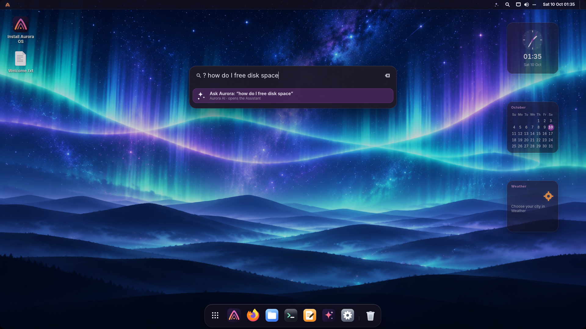
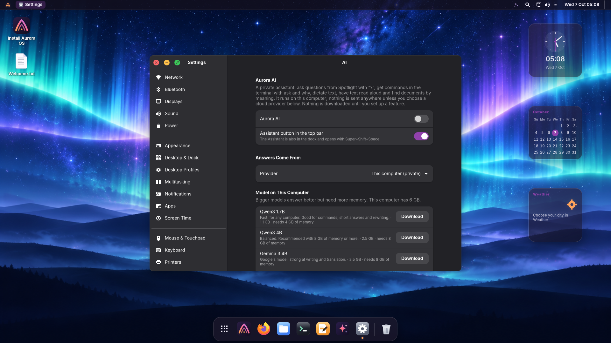

Aurora AI
An assistant that lives on your computer.
Ask questions, get the right terminal command, fix your writing, dictate, have text read aloud and find documents by what they're about. It runs locally and privately, or with the cloud service you choose. It's off until you turn it on.
The Assistant, always one click away
The ✦ button in the top bar, the icon in the dock, or Super+Shift+Space. Ask anything; answers stream in, commands come in blocks you copy with one click, and any answer can be read aloud.
- Quick actions on the text you copied: summarize, improve, translate, explain
- Conversations are saved locally; stop or regenerate an answer, and reopen earlier chats
- When you scroll up to read, new replies wait for you: an animated down-arrow takes you to the latest message without interrupting your reading
- Attach text, code, documents or photos with the paperclip or drag and drop. Photos are read with offline OCR; attachments are available only with the local AI model
- Floats like picture-in-picture: a compact card in the corner, above your other windows and on every workspace, while you keep working. Expand it or close it any time


Writing Tools, in every app
Select text anywhere (an e-mail, a document, a chat), press Super+Shift+W and choose: proofread, friendlier, more professional, shorter, summarize, key points or translate. Replace Selection puts the result right where the text was.

Ask from Spotlight
Type ? and your question in Spotlight. Longer questions also offer an
“Ask Aurora” result. With search by meaning turned on, Spotlight finds documents by what
they're about: “the electricity bill from March” finds the PDF even if it's called
scan_0042.pdf. Right-click an app, recent file or project for quick
actions such as pinning an app, copying a file path or opening a project workspace.

In the terminal
Say what you want. Get the command.
ask suggests a command and runs it only if you type y.
why explains why the last command failed and how to fix it.
user@aurora:~$ ask "find files bigger than 1 GB in my home" Aurora AI · local find ~/ -type f -size +1G This finds every file larger than 1 GB under your home folder. Run it? [y/N/e = edit] y user@aurora:~$ npm run build 2>&1 | why The build fails because the module "vite" isn't installed. Install the dependencies first: npm install
Everywhere it helps
Each place has its own switch.
✍️ Writing Tools
Proofread, rewrite, shorten, summarize or translate the selected text in any app.
📄 Files
Right-click a document: Summarize with Aurora or Ask About This File. Text, code, PDF, Word and LibreOffice. You can also drag files straight into the chat.
🖼️ Screenshots
Ask Aurora on the screenshot notification explains what's on screen, from an error dialog to a page of text.
🔔 Notifications
When they pile up, Summarize tells you what matters and what needs action.
🎙️ Dictation
Super+H, speak, Super+H. The text is typed wherever you are. Whisper, on your computer.
🔊 Read aloud
Select text and press Super+Shift+R: a natural voice (Piper) in any of 19 languages.
🔎 Search by meaning
Spotlight finds documents by their content in any language, with an index built and kept on your computer.
💻 Terminal
ask and why, in any language you like.
Set up
Private by default. Your choice of brain.
Open Settings → AI, switch on Aurora AI, and pick where the answers come from.
On this computer (free, private)
Download one model. It runs locally, even offline, loads when you ask and unloads after ten idle minutes.
| Model | Download | Memory | Good for |
|---|---|---|---|
| Qwen3 1.7B | 1.1 GB | 4 GB | Any computer; commands, short answers, rewriting |
| Qwen3 4B | 2.5 GB | 8 GB | Balanced; the recommended choice |
| Gemma 3 4B | 2.5 GB | 8 GB | Writing and translation |
| Qwen3 8B | 5 GB | 16 GB | The most capable; best with a graphics card |
Downloads are verified against pinned checksums. Graphics cards with Vulkan (Intel, AMD, NVIDIA) speed things up; the processor works too.
Or a cloud service
Anthropic Claude, OpenAI, Google Gemini, Mistral, OpenRouter, Groq, or Ollama on your computer. Paste your API key; it's kept in your login keyring.
⚠️ API keys are paid per use
Each answer uses credits billed by the provider, separately from any Claude Pro/Max or ChatGPT Plus subscription. Subscriptions only work in the providers' own apps. If you have one, install Claude Code or Codex from Dev Hub and sign in with your plan.

Questions
AI, answered.
Does anything leave my computer?
Not with the local model. The only network traffic is the one-time download of the pieces you set up (from GitHub, Hugging Face and PyPI). With a cloud provider, your questions and the text you ask about go to that provider. Chat attachments are blocked with cloud providers: choose the local model to attach files or photos. Conversations are saved in your user account, not uploaded by Aurora.
Which languages does it speak?
It answers in the language you write in, and follows “reply in Italian” whatever your system language. You can also fix one language in Settings. Dictation detects the language you speak; reading voices are available for 19 languages.
Can I turn parts of it off, or all of it?
Yes. Aurora AI is off until you switch it on; then Spotlight, the terminal, Writing Tools, Files, screenshots, notifications, dictation, reading and search by meaning each have a switch. Remove All AI Downloads frees the space.
Can I use my Claude or ChatGPT subscription?
Not inside Aurora AI: the providers only allow subscriptions in their own apps. Dev Hub installs Claude Code and OpenAI Codex, which sign in with your plan. Aurora AI works with an API key (billed per use) or for free with a local model.